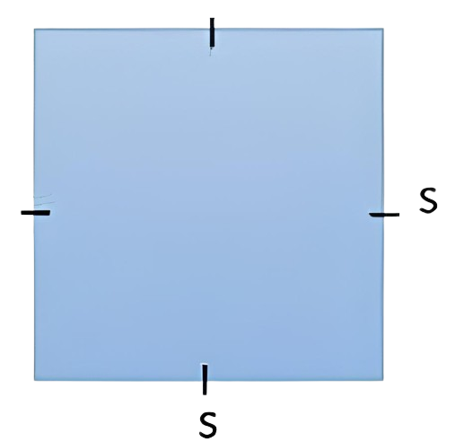

HITUNG LUAS PERSEGI
Rumus Luas Persegi yaitu:
L = S x S
HASIL
HITUNG KELILING PERSEGI
Rumus Keliling Persegi yaitu:
K = 4 x S
HASIL
Rumus Luas Persegi yaitu:
L = S x S
Rumus Keliling Persegi yaitu:
K = 4 x S